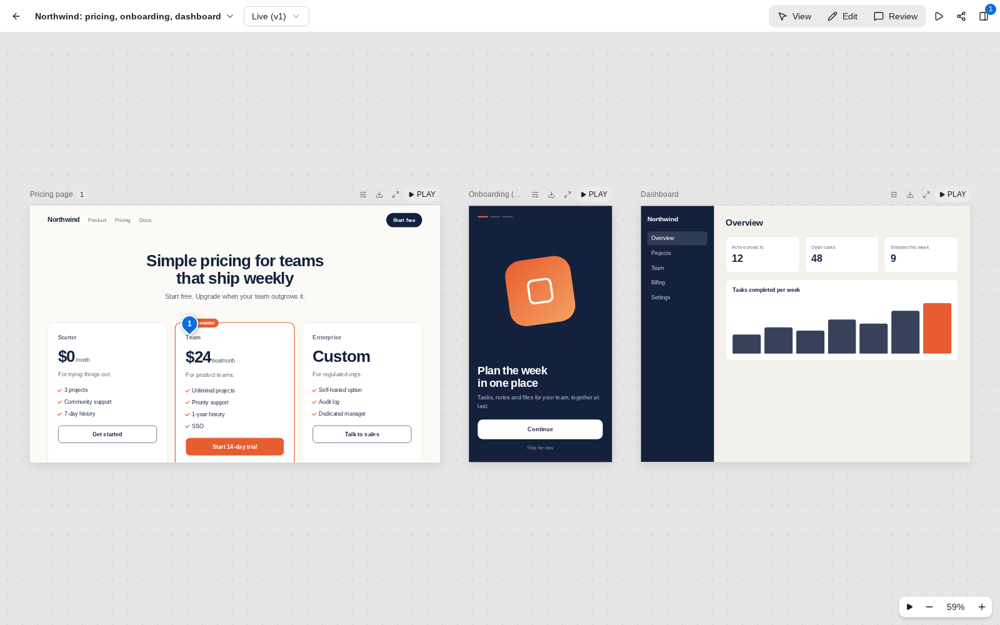
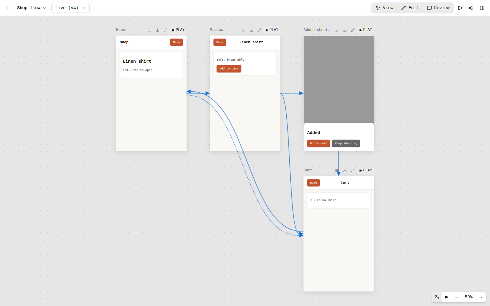

One review loop, shared with the AI
Publish
Ask your AI tool for a page or a design canvas. The result shows up in the hub as soon as it is done. Every change is saved as a new version, and you can go back to an earlier one.
Comment
Open the link, click any element and say what is wrong. The thread stays attached to that element, also on newer versions.
Answer
The AI reads the open comments, replies, fixes the page and marks the thread as resolved. It can also wait for new comments while you review.
Boards on a canvas
Boards sit side by side on an infinite wall. You can pan and zoom, focus one board, or present them in order. The owner edits in place with layers, properties and free placement, like in a design tool.
Every board is isolated from the rest of the app, so a page the AI wrote cannot reach your account or your other work.

Click dummies you can test
Wire boards into a clickable prototype with plain attributes, or with the editor's Prototype panel. Hotspots go to another board with a fade or slide, and a back button returns. A menu, tab or card can have states for hover, press and open.
Selects, radios and checkboxes can drive those states. An action can depend on a field: go to the cart only if the e-mail is valid and the terms are checked. Dialogs, drawers, sheets and popovers open over a board, and the flow view draws every link between boards.

Sharing, teams and access
- Share links
- View-only or comment links. Guests leave an e-mail, no account needed. Revoke a link any time.
- Members and roles
- Roles are owner, editor and commenter. Invite people by link. They sign in with a password, a passkey or GitHub.
- Control what the AI may do
- When you connect a tool, you choose what it may do: read, comment, publish and edit, or share. It never gets more rights than you have.
- Workspaces and shared files
- Group artifacts. Upload tokens.css or a font to a workspace once, and every board in it links to the same file.
- Form states and checks
- A select, radio or checkbox can switch a component state. A form can show an error until the e-mail is valid, with no script.
- Interactive pages
- Pages the AI builds can do more than look nice. A poll counts votes from everyone, and a notes page remembers what you typed.
- Export and import
- Boards as PNG, SVG, WebP or JPEG, whole artifacts as .zip. Imports exports from Claude Design.
It is yours
The database is one SQLite file in a volume you control. Accounts, share links and the access you gave your AI tools all live on your server, and no third-party service stores your work. The first account is the owner. After that, people join by invitation only.
Run it yourself
docker run -d --name artifact-hub -p 3000:3000 \
-v artifact-hub:/data \
-e NUXT_BASE_URL=https://hub.example.com \
ghcr.io/czepter/artifact-hub:latestgit clone https://github.com/czepter/artifact-hub.git
cd artifact-hub
npm install
npm run dev # http://localhost:3000- Open the hub and create the owner account on the sign-in page.
- Serve it over HTTPS and set
NUXT_BASE_URLto the public address. - In your AI tool, add
https://hub.example.com/mcpas an MCP server (in Claude: a custom connector) and approve the consent screen.
Environment variables, rendering, workspaces and the full API are in the README and the reference.